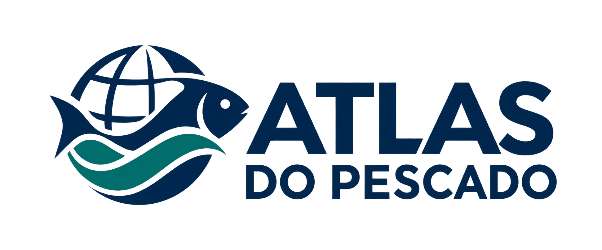
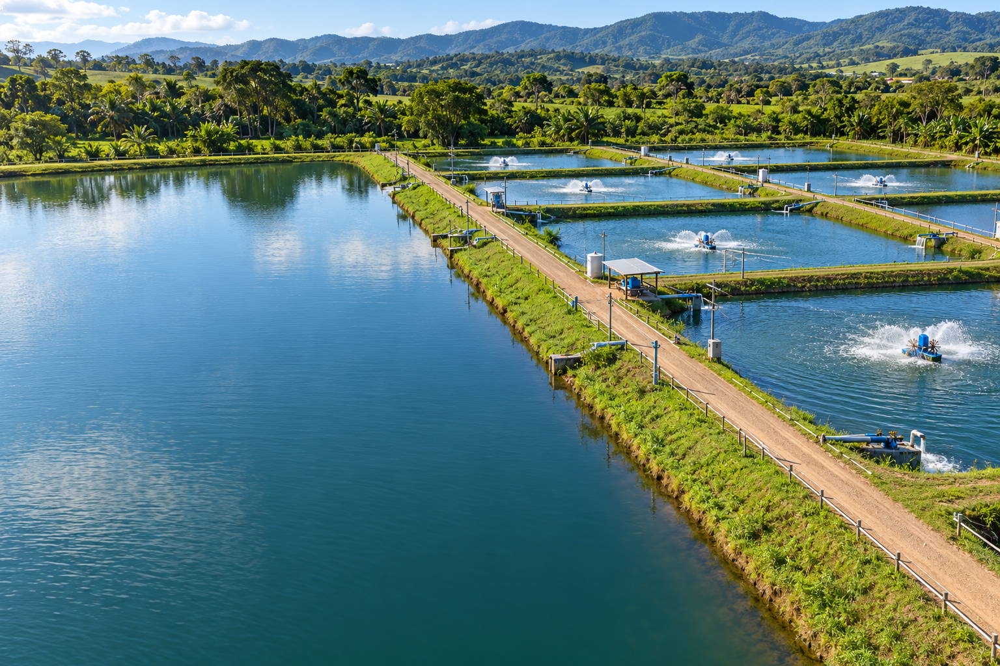

Reunir conhecimento
Facilitar a descoberta de bases sobre produção, comércio exterior, municípios e tecnologia do pescado.

EXPLORAÇÃO DE DADOS
Explore a cadeia do pescado: produção, pesquisa, mercados e tecnologia.
AQUICULTURA · EDITOR 2D
Áreas e volumes consideram formas geométricas simples, paredes verticais e fundo plano. Não incluem taludes, folga ou dimensionamento hidráulico. Projetos executivos exigem validação técnica.
Projetos são salvos apenas neste navegador. Baixe uma cópia para conservar o trabalho.

CONHECIMENTO QUE CONECTA ÁGUAS E DADOS
Vários dados da Engenharia de Pesca de bases abertas em um só lugar.
POR QUE O ATLAS EXISTE
O Atlas do Pescado foi criado para aproximar estudantes, pesquisadores e profissionais das informações sobre pesca, aquicultura e a cadeia do pescado. Reúne fontes, recortes e ferramentas de exploração em um único site.
Facilitar a descoberta de bases sobre produção, comércio exterior, municípios e tecnologia do pescado.
Explorar séries, gráficos e mapas com unidades, períodos e limites metodológicos identificados.
Preservar as fontes e os recortes para apoiar estudos, relatórios e análises que possam ser conferidos.
COMO FUNCIONA
Acesse Brasil, Internacional, Comércio exterior ou Municípios pelo menu. No catálogo, encontre outras fontes de dados.
Aplique os filtros disponíveis e acompanhe os resultados nos gráficos, mapas e tabelas. Confira os avisos de cobertura.
Baixe os recortes disponíveis em CSV e use as opções de código R. Consulte a fonte original e cite as transformações realizadas.
NA ROTINA DA ENGENHARIA DE PESCA
Encontre séries e referências para atividades acadêmicas, projetos e trabalhos de conclusão de curso.
Observe a evolução da aquicultura e os recortes geográficos disponíveis para apoiar diagnósticos e levantar novas perguntas.
Acompanhe recortes de exportação e importação de pescado como apoio à análise do setor, respeitando a cobertura de cada base.
EM DESENVOLVIMENTO
Uma futura assistente para ajudar a compreender os dados e navegar pelo conhecimento do Atlas. Ainda não está disponível.
TRANSPARÊNCIA · VERSÃO 1.0 · 30/09/2026
O Atlas do Pescado prioriza dados públicos e conjuntos com reutilização autorizada ou licença verificável, mantendo a identificação das fontes, licenças e condições de uso de cada conjunto.
Ler política completa (PDF) Baixar PDFA disponibilidade pública de uma informação não equivale a autorização irrestrita de reutilização. Antes de incorporar uma base, a política exige verificar sua origem, licença ou autorização, condições de uso, restrições e atribuição.
As condições da fonte original permanecem aplicáveis. A disponibilização pelo Atlas não implica endosso da instituição de origem. Materiais de terceiros devem respeitar suas próprias licenças.
Podem ser avaliados dados oficiais abertos, bases científicas com licença verificável, bases internacionais com condições próprias e produtos derivados com referência à fonte original.
Dados restritos, sigilosos, privados sem autorização, vazados, sob embargo ou sem autorização verificável de reutilização não devem ser incorporados. Baixar uma base ou acessar um artigo não autoriza redistribuir seus dados experimentais.
Cada conjunto deve registrar instituição, URL original, tipo de acesso, licença, data de acesso, período, cobertura geográfica, versão, atribuição, restrições e condições de redistribuição. Recortes, agregações e conversões devem identificar o processamento realizado pelo Atlas e preservar a autoria original.
Esta página resume a política do site. A publicação do documento não equivale à certificação de todos os conjuntos do catálogo. Consulte o PDF completo para os critérios, registros previstos e referências oficiais.
IBGE · PPM / SIDRA 3940
EVOLUÇÃO ANUAL
ANÁLISE DO PERÍODO
Resumo dos valores anuais de cada série.
COMPARAÇÃO REGIONAL
Soma dos produtos selecionados na aquicultura. A escolha abaixo é independente do filtro de região e UF acima.
Passe o cursor ou use Tab nos pontos para ver os valores.
DISTRIBUIÇÃO ESPACIAL
Soma dos produtos selecionados.
Selecione um estado no mapa para filtrar a série.
DETALHE DO RECORTE
PROVENIÊNCIA E COBERTURA
Produção em kg convertida para toneladas e valor em mil reais convertido para R$ milhões. Recorte por UF e produto. Último ano disponível na cópia: 2024.
Abrir tabela oficial ↗Produção (t) por espécie presente nos registros do arquivo. A base inclui captura acessória; seu nome não limita as linhas à espécie pargo. Cópia recebida em 24/09/2026.
Abrir conjunto oficial ↗Captura informada em kg, convertida para toneladas. 2025 é parcial nesta cópia. Cópia recebida em 24/09/2026.
Abrir portal oficial ↗As séries de captura representam apenas os registros presentes nesses dois arquivos, não a produção pesqueira total do Brasil. A base não contém UF. Ausências e dados suprimidos não foram tratados como zero. Valores monetários são nominais. A data de revisão dos arquivos de captura não está identificada nas cópias recebidas. Malha cartográfica: IBGE, API de Malhas ↗.
MDIC · COMEX STAT
EVOLUÇÃO ANUAL
Passe o cursor ou use Tab nos pontos.
UF DO PRODUTO
—
Passe o cursor por um estado.
PARCEIROS E PRODUTOS
ALÉM DO PAINEL ATUAL
O painel acima contém o capítulo 03. Para estudar conservas, preparações, óleos e farinhas, acesse os arquivos brutos do catálogo. São 70 arquivos anuais de uma mesma base oficial, além do recorte pronto e da referência global da FAO.
Ano e mês, NCM, país parceiro, UF do produto, transporte, unidade aduaneira, quantidade estatística, peso líquido e valor FOB. Os arquivos municipais usam SH4 e o domicílio fiscal do exportador ou importador.
Atenção ao escopo: os arquivos brutos incluem todos os produtos da economia. É necessário filtrar o pescado antes de calcular totais.
| Produto | Prefixos NCM |
|---|---|
| Peixes, crustáceos e outros animais aquáticos | 03* |
| Preparações e conservas de peixe | 1604 |
| Preparações de crustáceos e moluscos | 1605* |
| Óleos de peixe e de fígado de peixe | 150410 / 150420 |
| Farinhas e pós não destinados à alimentação humana | 230120 |
*O roteiro exclui caracóis não marinhos (03076000 e 16055800). É um recorte operacional, não uma classificação exaustiva de todos os derivados; revise códigos, usos e correspondências históricas. Os dados de 2026 terminam em agosto. Valores unitários FOB/kg não são preços de varejo.
FONTE E LIMITE
Consulta à API de Dados Gerais do Comex Stat, de 2022 a agosto de 2026. Valores FOB em dólares e peso líquido em toneladas. O ano 2026 é parcial; compare anos completos separadamente. O recorte inclui apenas NCM capítulo 03, sem preparados de outros capítulos. UF significa UF do produto na base geral e país é destino/origem. Dados oficiais ↗. Cópia processada em 27/09/2026.
Registros de pescado por município de desembarque. Consulte a origem e a cobertura de cada fonte.
BRASIL · DADOS TERRITORIAIS
Escolha um estado, sua região e um município para consultar os dados e suas fontes.
Carregando territórios…
RECORTE TERRITORIAL
IBGE · PPM / SIDRA 3940
DISTRIBUIÇÃO MUNICIPAL
Passe o cursor por um município.
DETALHE
FONTE E COBERTURA
Tabela 3940 da Pesquisa da Pecuária Municipal, ano 2024. Somamos apenas produtos com unidade quilograma, convertidos para toneladas, sem duplicar o agregado “Peixes”. Dados ausentes ou protegidos não são zero. Geometrias simplificadas da API de Malhas do IBGE. Tabela oficial ↗.
FAO · FISHSTAT 2026.1.0
COMPARAÇÃO INTERNACIONAL
ANÁLISE DO PERÍODO
Resumo dos valores anuais de cada país selecionado.
DISTRIBUIÇÃO MUNDIAL
Todas as espécies.
Selecione um país no mapa para comparar sua série.
DETALHE DO RECORTE
FONTE E COBERTURA
Séries de aquicultura e captura de 2015 a 2024, por país e item de espécie, na medida Q_tlw (toneladas de peso vivo). Entram valores numéricos reportados e estimados pela FAO; registros ausentes não viram zero. O mapa exibe os países presentes na malha Natural Earth 1:110m; pequenas ilhas podem constar nas séries sem polígono visível. Publicação da FAO ↗ · Malha Natural Earth ↗. Cópia processada em 27/09/2026.
BIBLIOTECA DE DADOS
Dados estatísticos, recortes para análise e pesquisas com licença aberta.
Arquivos preparados com origem, cobertura e condições de uso identificadas.
As fichas indicam o que foi verificado em cada arquivo.
Referências externas não tiveram seus valores validados nesta etapa. Uma verificação estrutural não certifica a coleta original nem a disponibilidade atual da fonte.
Capturas monitoradas e estimativas de frota e esforço têm coberturas diferentes. Consulte as unidades, a licença e o método antes de combinar as bases.
Carregando catálogo…
Um item pode ser uma base original ou um recorte identificado de uma mesma base. Pesquisas mantêm seus arquivos no repositório de origem; formatos, cobertura e tamanho variam. Exportar o catálogo baixa os metadados e os links, não os dados experimentais. A licença de cada conjunto é informada pela fonte.
DO DESEMBARQUE AO PRODUTO
Conservação, processamento, qualidade, segurança e aproveitamento de resíduos.
REFERÊNCIAS PARA COMEÇAR
ACOMPANHE O SETOR
Seleção de fontes institucionais sobre pesca, aquicultura, comércio e inovação.
TRANSPARÊNCIA DOS DADOS
Como interpretar, reproduzir e citar as séries do Atlas.
O catálogo aceita conjuntos com licença aberta explícita ou autorização pública verificável. Os dados de pesquisa informam a licença declarada pelo repositório; itens marcados como restritos, em embargo ou sem licença aberta ficam fora da seleção. Cada ficha contém a evidência de permissão, fonte e autoria. CC BY exige atribuição; CC BY-SA também exige compartilhamento de adaptações sob a mesma licença. Preserve a versão e indique as transformações feitas.
Dados estatísticos da FAO seguem CC BY 4.0 e os termos das bases FAO, salvo indicação específica. As bases oficiais federais aqui usadas têm autorização de livre utilização no art. 4º do Decreto 8.777/2016. A fonte original permanece responsável pelos dados; o Atlas identifica seus recortes e não sugere endosso institucional.
O catálogo lista bases, estudos e arquivos anuais: várias entradas podem pertencer à mesma fonte. Para pesquisas, o ano mostrado é o da publicação, não necessariamente o da coleta. Notícias e manuais são referências externas com resumos próprios; não compõem a contagem de dados nem recebem automaticamente a licença dos conjuntos.
Dado integrado: alimenta um painel identificado na ficha. Arquivo preparado: pode ser baixado, mas não está integrado aos cálculos dos painéis. Referência: encaminha à fonte; listar metadados não equivale a validar os valores do arquivo.
Duas referências CC BY aguardam reconfirmação da versão da licença. Componentes de uma referência HydroShare exigem autorização específica e não foram incorporados. A ficha informa essas condições; nenhuma dessas pendências autoriza integração automática.
As verificações locais conferem hashes, estrutura, anos, medidas, códigos territoriais e NCM quando presentes. Lacunas de cobertura e campos ausentes permanecem identificados. Consulte o relatório completo para unidades, transformações, limitações e datas disponíveis.
O histórico documenta as revisões a partir desta etapa.
Baixar histórico JSON| Indicador | Unidade e cálculo |
|---|---|
| Aquicultura IBGE | kg ÷ 1.000 = toneladas; valor em mil R$ ÷ 1.000 = R$ milhões nominais. |
| Captura MPA | Soma dos registros de pargo e sardinha disponíveis, em toneladas. Não representa a captura total do Brasil. |
| Produção FAO | Q_tlw: toneladas de peso vivo por país, ano e espécie ou grupo. |
| Comércio MDIC | Peso líquido em kg ÷ 1.000 = toneladas; valor em dólares FOB. Apenas NCM capítulo 03. |
Um traço (—) indica ausência de observação comparável. Dados ausentes, suprimidos ou não aplicáveis não são convertidos em zero. Os percentuais de variação usam somente séries com valores nos dois anos. Na aquicultura municipal somamos produtos em kg sem incluir agregados que duplicariam seus componentes.
As bases têm conceitos e coberturas distintos. A produção de captura presente nos arquivos do MPA não equivale ao total da FAO; séries do IBGE e da FAO não devem ser somadas como se fossem a mesma medida. 2025 na captura da sardinha e 2026 no comércio são parciais.
IBGE. Produção da aquicultura, por tipo de produto: tabela 3940. SIDRA. Disponível em: sidra.ibge.gov.br/tabela/3940. Acesso em: 27 set. 2026.
FAO. Global production: March 2026 update. FishStat 2026.1.0. Disponível em: fao.org/statistics/events. Acesso em: 27 set. 2026.
MDIC. Estatísticas de Comércio Exterior em Dados Abertos. Comex Stat. Disponível em: gov.br/mdic · base de dados bruta. Acesso em: 27 set. 2026.
MPA. Dados abertos da pesca e aquicultura: registros de captura do pargo e da sardinha-verdadeira. Disponível em: gov.br/mpa · dados abertos. Acesso em: 27 set. 2026.
Os CSVs preservam ano, localização, item e medida em colunas separadas. No comércio, valor_fob_usd é o valor em dólar, peso_liquido_kg é o peso em kg e ncm é a classificação do produto. Na FAO, codigo_fao_especie identifica o item original. O catálogo contém os recortes preparados e links das fontes para consulta completa.
Para citar uma visualização, informe a fonte indicada no painel, o recorte aplicado e a data de acesso ao Atlas. As cópias aqui apresentadas foram processadas em 27/09/2026.